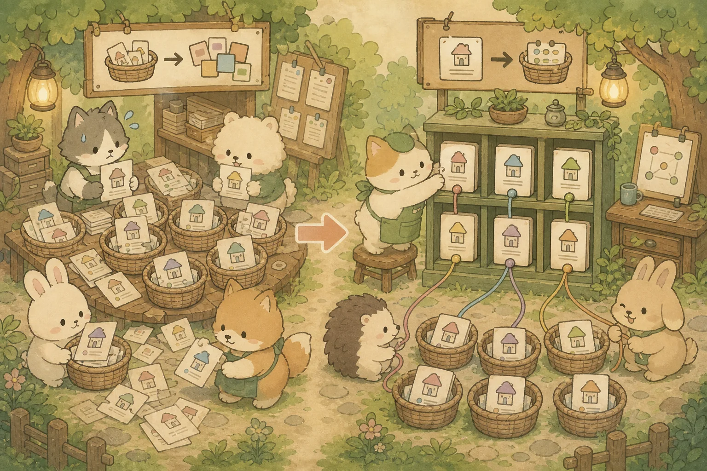
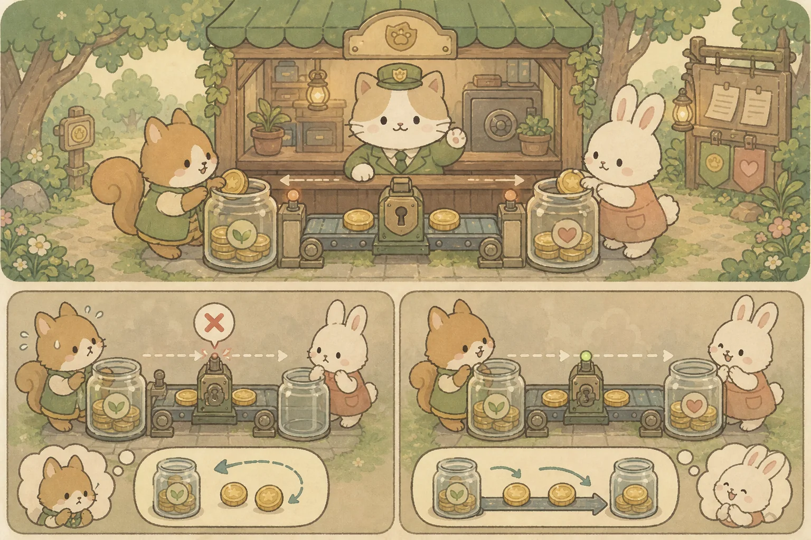
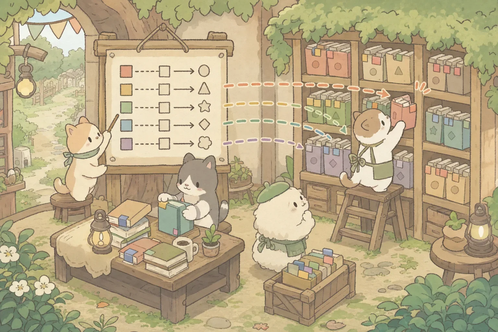
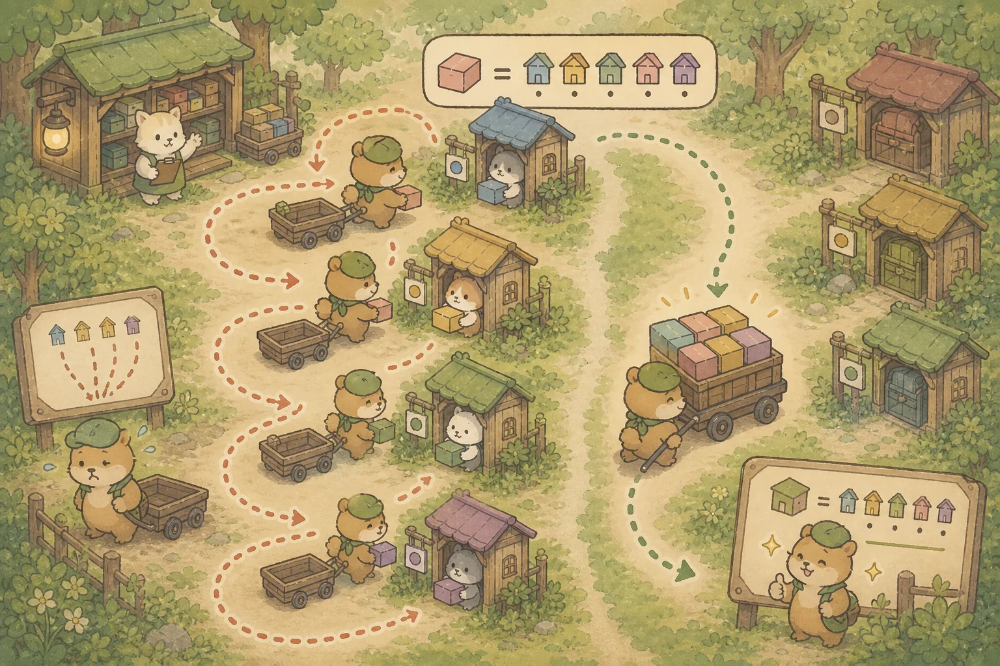

Chapter 03: 데이터베이스 & SQL + QueryDSL 완전 정복
SQL 기초(SELECT, JOIN, 서브쿼리)부터 정규화, 트랜잭션/ACID, 인덱스 튜닝, N+1 문제 해결, 그리고 QueryDSL 동적 쿼리까지 — 백엔드 개발자의 DB 역량을 총 12개 섹션으로 완전 정복합니다.
📝 A. SQL 기초 — SELECT, WHERE, GROUP BY
1. SELECT & WHERE — 데이터 조회의 기본기
모든 DB 작업의 출발점입니다. SELECT로 어떤 컬럼을 가져올지, WHERE로 어떤 조건의 행만 필터링할지 지정합니다.
-- 전체 컬럼 조회 (실무에서는 * 대신 필요한 컬럼만 명시!)
SELECT * FROM product;
-- 특정 컬럼만 조회
SELECT name, price, category FROM product;
-- WHERE 조건 필터링
SELECT name, price FROM product
WHERE category = 'tops' AND price <= 50000;
-- 정렬: ORDER BY (ASC=오름차순, DESC=내림차순)
SELECT name, price FROM product
ORDER BY price DESC; -- 비싼 순
-- 제한: LIMIT (상위 N개만)
SELECT name, price FROM product
ORDER BY price DESC
LIMIT 10; -- 상위 10개만
-- 중복 제거: DISTINCT
SELECT DISTINCT category FROM product;
-- 패턴 검색: LIKE
SELECT * FROM product
WHERE name LIKE '%셔츠%'; -- '셔츠'가 포함된 상품
-- %: 0개 이상의 임의 문자, _: 정확히 1개 문자
-- NULL 체크: IS NULL / IS NOT NULL (= NULL은 작동 안 함!)
SELECT * FROM product WHERE deleted_at IS NULL;2. GROUP BY & 집계 함수 — 데이터 요약 분석
GROUP BY는 특정 컬럼 값이 같은 행끼리 묶어서 집계 함수(COUNT, SUM, AVG, MAX, MIN)를 적용합니다.
💡 비유로 이해하기: 매장별 매출 보고서
전 매장의 판매 기록을 매장별(GROUP BY store)로 묶은 뒤, 각 매장의 총 매출(SUM), 평균 단가(AVG), 판매 건수(COUNT)를 한 줄로 요약하는 것과 같습니다.
-- 카테고리별 상품 수, 평균 가격, 최고가
SELECT
category,
COUNT(*) AS product_count,
AVG(price) AS avg_price,
MAX(price) AS max_price
FROM product
GROUP BY category;
-- 결과: tops | 45 | 52000 | 120000
-- bottoms | 32 | 68000 | 180000
-- HAVING: GROUP BY 결과에 조건 걸기 (WHERE는 그룹 전, HAVING은 그룹 후!)
SELECT category, COUNT(*) AS cnt
FROM product
GROUP BY category
HAVING COUNT(*) >= 10; -- 상품이 10개 이상인 카테고리만
-- ⚠️ WHERE vs HAVING 구분!
-- WHERE: 개별 행을 필터링 (GROUP BY 전에 실행)
-- HAVING: 그룹 결과를 필터링 (GROUP BY 후에 실행)🔗 B. JOIN — 테이블 간 연결
3. JOIN 완전 정복 — INNER, LEFT, RIGHT, CROSS
실무에서는 데이터가 여러 테이블에 분산되어 있으므로, JOIN으로 연결하여 필요한 데이터를 한 번에 가져옵니다.
-- 1. INNER JOIN: 양쪽 테이블 모두에 매칭되는 행만 (가장 흔함!)
SELECT o.id, m.name AS member_name, p.name AS product_name, o.quantity
FROM orders o
INNER JOIN member m ON o.member_id = m.id
INNER JOIN product p ON o.product_id = p.id;
-- 주문이 없는 회원은 결과에 안 나옴!
-- 2. LEFT JOIN: 왼쪽 테이블 전체 + 오른쪽 매칭 (없으면 NULL)
SELECT m.name, o.id AS order_id
FROM member m
LEFT JOIN orders o ON m.id = o.member_id;
-- 주문이 없는 회원도 나옴 (order_id = NULL)
-- 3. RIGHT JOIN: 오른쪽 테이블 전체 + 왼쪽 매칭 (LEFT의 반대)
-- 실무에서는 LEFT JOIN으로 통일하는 것이 가독성에 좋습니다.
-- 4. CROSS JOIN: 모든 행의 조합 (N × M개 결과) — 거의 안 씀
SELECT * FROM color CROSS JOIN size;
-- color 5개 × size 4개 = 20개 조합4. 서브쿼리 — 쿼리 안의 쿼리
쿼리 결과를 다른 쿼리의 조건이나 데이터로 활용합니다.
-- 1. WHERE절 서브쿼리: 평균가보다 비싼 상품 조회
SELECT name, price FROM product
WHERE price > (SELECT AVG(price) FROM product);
-- 2. IN 서브쿼리: 주문된 적 있는 상품만 조회
SELECT name FROM product
WHERE id IN (SELECT DISTINCT product_id FROM orders);
-- 3. FROM절 서브쿼리 (인라인 뷰): 카테고리별 최고가 상품
SELECT sub.category, sub.max_price
FROM (
SELECT category, MAX(price) AS max_price
FROM product
GROUP BY category
) sub
WHERE sub.max_price > 100000;🏗️ C. 정규화 & 트랜잭션
5. 정규화 (Normalization) — 데이터 중복 제거 설계
테이블 하나에 모든 데이터를 때려넣으면 데이터 중복, 수정 이상(Anomaly), 삭제 이상이 발생합니다. 정규화는 테이블을 체계적으로 분리하여 이를 방지합니다.
💡 비유로 이해하기: 주소록 정리
비정규화는 연락처에 "홍길동 / 서울시 강남구 / 02-1234 / 회사: ABC"를 매 주문마다 반복 기록하는 것입니다. 홍길동이 이사하면 모든 주문의 주소를 일일이 바꿔야 합니다. 정규화는 "회원 테이블"에 주소를 딱 한 번만 저장하고, 주문에서는 회원 ID만 참조하는 것입니다.

1NF (제1정규형)
모든 컬럼 값이 원자적(Atomic)이어야 함. "셔츠,바지" 같은 다중값 ❌ → 행을 분리하거나 별도 테이블로.
2NF (제2정규형)
1NF + 부분 종속 제거. 복합 PK의 일부에만 종속되는 컬럼을 별도 테이블로 분리.
3NF (제3정규형)
2NF + 이행 종속 제거. PK → A → B처럼 간접 종속되는 B를 별도 테이블로. 실무 기본 목표!
6. 트랜잭션 & ACID — 데이터 무결성의 수호자
트랜잭션은 "전부 성공하거나, 전부 취소(롤백)"되어야 하는 하나의 작업 단위입니다.
💡 비유로 이해하기: 계좌 이체
A계좌에서 10만원을 빼고(출금) B계좌에 10만원을 넣는(입금) 작업은 반드시 둘 다 성공하거나, 둘 다 취소되어야 합니다. 출금만 되고 입금이 실패하면 돈이 증발합니다! 이것이 트랜잭션의 원자성(Atomicity)입니다.

@Service
@RequiredArgsConstructor
public class OrderService {
@Transactional // 이 메서드 전체가 하나의 트랜잭션!
public OrderResponse createOrder(OrderRequest request) {
// 1. 상품 조회
Product product = productRepository.findById(request.productId())
.orElseThrow(() -> new ProductNotFoundException(request.productId()));
// 2. 재고 차감 (실패 시 전체 롤백!)
product.decreaseStock(request.quantity());
// 3. 주문 생성
Order order = Order.create(request.memberId(), product, request.quantity());
orderRepository.save(order);
return OrderResponse.from(order);
}
// 메서드가 정상 종료하면 자동 COMMIT
// 예외가 발생하면 자동 ROLLBACK (RuntimeException 기본)
}
// ⚠️ @Transactional 주의사항
// 1. readOnly=true: 조회 전용 힌트 (flush/더티 체킹 부담↓, 프로바이더·버전 의존)
// @Transactional(readOnly = true)
// public List<Product> findAll() { ... }
//
// 2. 같은 클래스 내부 호출은 @Transactional이 작동하지 않음!
// (프록시 기반이므로 외부에서 호출해야 AOP 적용됨)⚡ D. 인덱스 & 성능 튜닝
7. Full Table Scan vs Index Seek — 인덱스의 원리
쿼리 성능 병목의 대다수는 누락되거나 잘못 설계된 인덱스에서 비롯됩니다.
💡 비유로 이해하기: 도서관 전체 훑기 vs 검색 컴퓨터
Full Table Scan은 도서관에서 원하는 책을 찾기 위해 모든 책장을 처음부터 끝까지 훑는 것입니다. Index Seek는 검색 컴퓨터로 "F열 3번째 칸"이라는 위치를 즉시 알아내고 바로 이동하는 것입니다.

-- 인덱스 없이 검색 → Full Table Scan
EXPLAIN SELECT * FROM product WHERE category = 'outer';
-- Type: ALL (전체 스캔!), Rows: 10000 → 느림
-- 인덱스 생성
CREATE INDEX idx_product_category ON product(category);
-- 인덱스 있고 검색 → Index Seek
EXPLAIN SELECT * FROM product WHERE category = 'outer';
-- Type: ref (인덱스 사용!), Key: idx_product_category, Rows: 12 → 빠름!8. Clustered vs Non-Clustered Index
🔑 Clustered Index
테이블 자체가 인덱스. 데이터 행이 인덱스 키 순서대로 물리적으로 정렬됨.
테이블당 딱 1개만 가능 (보통 PK가 자동 담당).
비유: 백과사전 — 본문 자체가 가나다순 정렬.
🔎 Non-Clustered Index
별도의 색인 페이지. 데이터는 뒤죽박죽이고, 별도 페이지에서 정렬 후 실제 행의 주소(RID)를 가리킴.
테이블당 여러 개 가능.
비유: 소설책 뒤 "찾아보기(색인)" — 단어만 정렬, 페이지 번호 참조.
9. N+1 문제 — JPA 성능 킬러와 해결법
JPA에서 연관 엔티티를 지연 로딩(LAZY)으로 설정하면, 부모 엔티티 N개를 조회한 뒤 각각의 자식을 개별 쿼리로 가져오는 N+1 문제가 발생합니다.
💡 비유로 이해하기: 배달 주문 처리
주문 10개를 조회하는 쿼리 1번 + 각 주문의 상품 정보를 개별 조회하는 쿼리 10번 = 총 11번의 DB 호출. 주문이 1,000개면 1,001번! 마치 택배 기사가 같은 아파트 물건 10개를 한 번에 싣지 않고, 물건 하나마다 창고를 왕복하는 것과 같습니다.

// ❌ N+1 발생: 주문 10개 조회 후, 각 주문의 member를 개별 조회 (11번 쿼리!)
List<Order> orders = orderRepository.findAll(); // SELECT * FROM orders (1번)
for (Order o : orders) {
o.getMember().getName(); // SELECT * FROM member WHERE id=? (N번!)
}
// ✅ 해결법 1: JPQL Fetch Join (가장 흔함!)
@Query("SELECT o FROM Order o JOIN FETCH o.member JOIN FETCH o.product")
List<Order> findAllWithMemberAndProduct();
// → 단 1번의 JOIN 쿼리로 전부 가져옴!
// ✅ 해결법 2: @EntityGraph (어노테이션 방식)
@EntityGraph(attributePaths = {"member", "product"})
@Query("SELECT o FROM Order o")
List<Order> findAllWithGraph();
// ✅ 해결법 3: BatchSize (컬렉션 지연 로딩 최적화)
// application.yml → spring.jpa.properties.hibernate.default_batch_fetch_size: 100
// → IN 쿼리로 한 번에 100개씩 묶어서 가져옴🧩 E. QueryDSL 동적 쿼리
10. QueryDSL — 타입 안전한 동적 쿼리 빌더
문자열 JPQL은 오타가 있어도 컴파일 에러가 나지 않고, 런타임에 폭발합니다. QueryDSL은 자바 코드로 쿼리를 작성하므로 IDE 자동완성 + 컴파일 타임 검증이 됩니다.
💡 비유로 이해하기: 레고 블록 vs 찰흙
문자열 JPQL은 찰흙으로 형태를 빚는 것 — 겉보기엔 괜찮아도 실행해봐야 부러지는지 알 수 있습니다. QueryDSL은 레고 블록 — 아귀가 안 맞으면 애초에 결합이 안 되므로 빌드 단계에서 오류를 잡아냅니다.
@Repository
@RequiredArgsConstructor
public class ProductQueryRepository {
private final JPAQueryFactory queryFactory;
public List<Product> searchProducts(ProductSearchCondition cond) {
QProduct product = QProduct.product;
return queryFactory
.selectFrom(product)
.where(
categoryEq(cond.getCategory()), // null이면 조건 생략!
priceLoe(cond.getMaxPrice()),
stockGoe(cond.getMinStock())
)
.orderBy(product.price.asc())
.limit(20)
.fetch();
}
// BooleanExpression이 null을 반환하면 WHERE에서 자동 무시 — 실무 핵심 패턴!
private BooleanExpression categoryEq(String category) {
return category != null ? QProduct.product.category.eq(category) : null;
}
private BooleanExpression priceLoe(Integer maxPrice) {
return maxPrice != null ? QProduct.product.price.loe(maxPrice) : null;
}
private BooleanExpression stockGoe(Integer minStock) {
return minStock != null ? QProduct.product.stock.goe(minStock) : null;
}
}11. 페이징 처리 — Offset vs Cursor 방식
수만 건의 데이터를 한 번에 가져오면 메모리와 네트워크가 폭발합니다. 페이징으로 필요한 만큼만 잘라서 조회합니다.
// 1. Spring Data JPA — Pageable 인터페이스
public interface ProductRepository extends JpaRepository<Product, Long> {
Page<Product> findByCategory(String category, Pageable pageable);
}
// 사용:
Pageable pageable = PageRequest.of(0, 20, Sort.by("price").ascending());
// page=0 (첫 페이지), size=20 (20개씩)
Page<Product> result = productRepository.findByCategory("tops", pageable);
result.getContent(); // 실제 데이터 리스트
result.getTotalElements(); // 전체 행 수
result.getTotalPages(); // 전체 페이지 수
result.hasNext(); // 다음 페이지 존재 여부
// 2. QueryDSL 페이징
public Page<Product> searchWithPaging(ProductSearchCondition cond, Pageable pageable) {
List<Product> content = queryFactory
.selectFrom(product)
.where(categoryEq(cond.getCategory()))
.orderBy(product.id.desc())
.offset(pageable.getOffset())
.limit(pageable.getPageSize())
.fetch();
Long total = queryFactory
.select(product.count())
.from(product)
.where(categoryEq(cond.getCategory()))
.fetchOne();
return new PageImpl<>(content, pageable, total);
}⚠️ Offset 방식의 한계: OFFSET 100000이면 10만 행을 읽고 버리므로 성능이 급격히 저하됩니다. 무한 스크롤 같은 대용량 페이징에서는 Cursor 기반 페이징(마지막 ID 기준)을 사용합니다:
// Cursor 방식: "마지막으로 본 ID보다 작은 것 20개"
public List<Product> findNextPage(Long lastId, int size) {
return queryFactory
.selectFrom(product)
.where(product.id.lt(lastId)) // WHERE id < lastId (OFFSET 대신!)
.orderBy(product.id.desc())
.limit(size)
.fetch();
}🛠️ [실무 보강 박스] Flyway — DB 스키마 진화를 안전하게 관리
운영 DB의 스키마 변경(컬럼 추가, 인덱스 추가, 테이블 분리)을 손으로 일일이 SQL 돌리면 환경마다 상태가 어긋나서 끔찍한 버그가 생깁니다. Flyway는 DB 스키마를 코드처럼 버전 관리합니다 — Git처럼 "어떤 변경이 언제 적용됐는지"가 DB 자체에 기록됩니다.
// build.gradle
dependencies {
implementation 'org.flywaydb:flyway-core'
implementation 'org.flywaydb:flyway-database-postgresql' // PG 14+ 시 필수
}
// src/main/resources/db/migration/ 폴더 구조 (이 폴더가 표준 경로)
db/migration/
├── V1__create_products_table.sql
├── V2__create_orders_table.sql
├── V3__add_index_on_products_name.sql
└── V4__add_review_table.sql
// 파일명 규칙: V{버전}__{설명}.sql (언더바 2개!)
// 한 번 적용된 파일은 절대 수정 금지. 수정하려면 새 V{N+1} 파일 만들기.CREATE TABLE products (
id BIGSERIAL PRIMARY KEY,
name VARCHAR(200) NOT NULL,
price INT NOT NULL CHECK (price >= 0),
category VARCHAR(50) NOT NULL,
stock INT NOT NULL DEFAULT 0,
image_url VARCHAR(500),
created_at TIMESTAMP NOT NULL DEFAULT CURRENT_TIMESTAMP,
updated_at TIMESTAMP NOT NULL DEFAULT CURRENT_TIMESTAMP
);
CREATE INDEX idx_products_category ON products(category);
CREATE INDEX idx_products_name_lower ON products(LOWER(name));핵심 동작: Spring Boot 기동 시 Flyway가 flyway_schema_history 테이블을 확인하여 아직 적용 안 된 V 파일들을 순서대로 실행합니다. 모든 환경(개발/스테이징/운영)이 자동으로 같은 스키마로 수렴합니다.
Liquibase와의 차이: Flyway는 순수 SQL 파일 기반(단순), Liquibase는 XML/YAML DSL 기반(롤백 자동 생성 가능). 한국 실무에선 Flyway가 더 보편적입니다.
⛓️ Spring Modulith에서 모듈마다 독립적인 마이그레이션 폴더를 운영하는 패턴은 Chapter 8 — Spring Modulith에서 확장됩니다.
📚 03챕터 헷갈리는 용어 사전
🛠️ 직접 만들어보기 — "이걸로 만들 수 있나?" 체크포인트
읽기만으로는 복귀가 안 됩니다. 실제 DB에 붙어 쿼리와 실행계획을 눈으로 확인하세요.
- PostgreSQL(또는 H2)에 상품 테이블 + 데이터 수천~수만 건 시드
- 이름 LIKE 검색 쿼리에
EXPLAIN ANALYZE를 찍어 Seq Scan 확인 - 적절한 인덱스 추가 후 다시
EXPLAIN→ Index Scan으로 바뀌는지 + 속도 비교 - QueryDSL로 카테고리·가격·사이즈 동적 검색 1개 구현
- Flyway
V1__*.sql마이그레이션으로 스키마를 코드로 관리